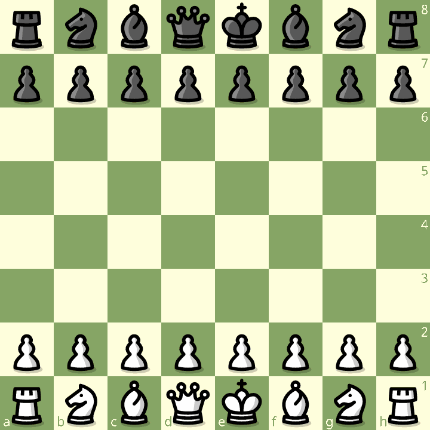

Șah-Mat!
Scopul Suprem al Jocului
- Scopul principal al jocului este de a face mat regele advers. De aceea regii sunt principalele figuri de pe tabla de șah.
- Ținta finală a atacului urmărește punerea regelui advers într-o poziție din care, atacat fiind, nu mai are unde să scape și nici nu mai poate fi salvat de soldații lui prin capturarea piesei care atacă sau prin interpunerea unui scut.
- Atacul asupra altor piese și eliminarea lor de pe tablă prin schimburi sau câștiguri de piese sunt doar mijloace de înlăturare a apărătorilor regelui.
- Jocul continuă independent de dispariția pieselor de pe tablă, cu excepția dispariției regelui care, dacă nu se mai poate apăra, depune armele, marcând sfârșitul partidei.
